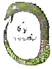
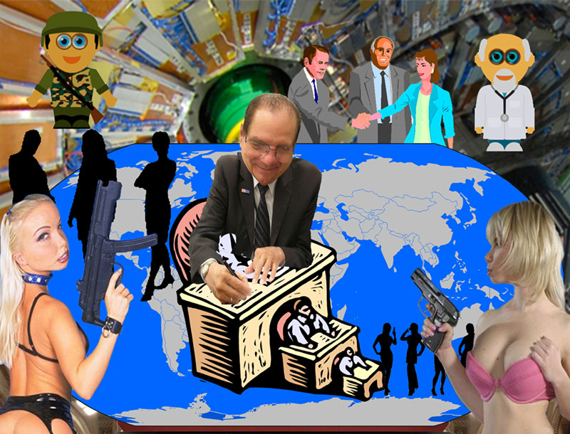

Last and First Men, written by Olaf Stapledon, in 1931, ...in which the cells of a multicellular creature communicate with each other by means of electric and magnetic fields... The chief barrier to progress in neurophysiology is the lack of observational tools. To understand in depth what is going on in the brain, we need tools that can fit inside or between the neurons and transmit reports of neural events to receivers outside. ...observing instruments...with rapid response, high band-width and high spacial resolution...There is no law of physics that declares that such an observational tool to be impossible. We know that high-frequency electromagnetic signals can be propagated through brain tissue for distances of the order of centimeters. We know that microscopic generators and receivers of electromagnetic radiation are possible. We know that modern digital data-handling technology is capable of recording and analyzing the signals emerging from millions of tiny transmitters simultaneously. All that is lacking in order to transform these possibilities into an effective observational tool is the neurological equivalent of integrated-circuit technology. We need a technology that allows us to build and deploy large arrays of small transmitters inside a living brain, just as integrated-circuit technology allows us to build large arrays of small transistors on a chip of silicon. ...Radioneurology is in principle only an extension of the existing technology of magnetic resonance imaging, which also used radio-frequency magnetic fields to observe neural structures. A rough estimate based on the available band-width indicates that a million transmitters could be monitored through each patch of brain surface with size equal to the radio wave-length. The factor of a million is the ratio between the radio band-width, of the order of hundreds of millions of cycles per second, and the band-width of a neuron, of the order of hundred of cycles...."
I GRADUATION DAY
II THE VISION OF PHILIP DRU
III LOST IN THE DESERT
IV THE SUPREMACY OF MIND
V THE TRAGEDY OF THE TURNERS
VI THE PROPHET OF A NEW DAY
VII THE WINNING OF A MEDAL
VIII THE STORY OF THE LEVINSKYS
IX PHILIP BEGINS A NEW CAREER
X GLORIA DECIDES TO PROSELYTE THE RICH
XI SELWYN PLOTS WITH THOR
XII SELWYN SEEKS A CANDIDATE
XIII DRU AND SELWYN MEET
XIV THE MAKING OF A PRESIDENT
XV THE EXULTANT CONSPIRATORS
XVI THE EXPOSURE
XVII SELWYN AND THOR DEFEND THEMSELVES
XVIII GLORIA'S WORK BEARS FRUIT
XIX WAR CLOUDS HOVER
XX CIVIL WAR BEGINS
XXI UPON THE EVE OF BATTLE
XXII THE BATTLE OF ELMA
XXIII ELMA'S AFTERMATH
XXIV UNCROWNED HEROES
XXV THE ADMINISTRATOR OF THE REPUBLIC
XXVI DRU OUTLINES HIS INTENTIONS
XXVII A NEW ERA AT WASHINGTON
XXVIII AN INTERNATIONAL CRISIS
XXIX THE REFORM OF THE JUDICIARY
XXX A NEW CODE OF LAWS
XXXI THE QUESTION OF TAXATION
XXXII A FEDERAL INCORPORATION ACT
XXXIII THE RAILROAD PROBLEM
XXXIV SELWYN'S STORY
XXXV SELWYN'S STORY, CONTINUED
XXXVI SELWYN'S STORY, CONTINUED
XXXVII THE COTTON CORNER
XXXVIII UNIVERSAL SUFFRAGE
XXXIX A NEGATIVE GOVERNMENT
XL A DEPARTURE IN BATTLESHIPS
XLI THE NEW NATIONAL CONSTITUTION
XLII NEW STATE CONSTITUTIONS
XLIII THE RULE OF THE BOSSES
XLIV ONE CAUSE OF THE HIGH COST OF LIVING
XLV BURIAL REFORM
XLVI THE WISE DISPOSITION OF A FORTUNE
XLVII THE WISE DISPOSITION OF A FORTUNE, CONTINUED
XLVIII AN INTERNATIONAL COALITION
XLIX UNEVEN ODDS
L THE BROADENING OF THE MONROE DOCTRINE
LI THE BATTLE OF LA TUNA
LII THE UNITY OF THE NORTHERN HALF OF THE WESTERN
HEMISPHERE UNDER THE NEW REPUBLIC
LIII THE EFFACEMENT OF PHILIP DRU
Ministry. The techniques, which include debilitating high frequency radio waves, hypnotic computer-scrambled sounds and mind-bending electromagnetic fields, as well as an ultrasound gun capable of killing a cat at fifty meters, were originally developed for medical purposes and adapted into weapons, said journalist Yury Vorobyovsky, who has been investigating the program for three years. Ecology and Living Environment," an environmental and civil liberties group which claims a membership of 500 people in Moscow, has set up an association of "Victims of Psychotronic Experimentation," who have filed damages claims against the Federal Security Service, or FSB, and the government. Unfortunately, since by definition many of the victims are psychologically disturbed, there is a problem of verification. "The Health Ministry and the FSB are doing medical experiments on over a million innocent people," said Ecology and Living Environment President Yemilia Cherkova, an ex-member of Zelenograd's local council. Cherkova wears a lead helmet in bed to protect herself against the rays she says the government beams into her flat. "They put chemicals in the water and use magnets to alter your mind. We are fighting to prove to the authorities that we are not mad." Despite these somewhat far-fetched testimonies, there is strong evidence that some kind of psychotronic warfare program did exist in the Soviet period, and that the technology may be falling into the wrong hands. Official confirmation was first hinted at in the 1991 Soviet budget, which mentioned that 500 million rubles of the state security budget had been spent on "psychological warfare technology" over an unspecified period of years, said Vorobyovsky. Former state security and interior minister General Viktor Barannikov, sacked for supporting the 1993 coup attempt, warned in an Interior Ministry memorandum earlier that year that he had information that the Mafia had got hold of the technology, though little concrete evidence has been found by police. "We have no evidence that our local Mafia has psychotronic weapons; they have enough ordinary ones," said Gennady Melnik of the Moscow Police Department. "They are not the most technologically advanced Mafia in the world. It must be cheaper just to use guns." Nevertheless, the State Duma is taking the matter seriously enough to draft a law on "security of the individual," which will include regulation of subliminal advertising and pseudo-religious sects, as well as imposing state controls on all equipment in private hands which can be used as "psychotronic weaponry." The legislation brings Russia into line with
Statement of Dr. Samuel G. Varnado Director, Information Operations Center Sandia National Laboratories
United States House of Representatives Committee on Homeland Security, Subcommittee on Economic Security, Infrastructure Protection, and Cyber Security and the Subcommittee on Emergency Preparedness, Science, and Technology
SCADA and the Terrorist Threat: Protecting the Nation's Critical Control Systems
October 18, 2005
Supplemental Statement of Dr. Samuel Glenn Varnado Sandia National Laboratories 1515 Eubank NE Albuquerque, New Mexico (505) 845-9555
Summary of Major Points
• The nation's infrastructure is highly vulnerable to cyber threats. Supervisory Control and Data Acquisition (SCADA) systems are prime targets for hackers, terrorists, and nation states.
• U.S. computer networks are under daily attack. Adversaries are becoming more sophisticated. We are seeing structured, well-resourced attacks that are designed to steal information or disrupt and/or deny processes.
• Information technology vendors release four new vulnerability announcements each day. At the same time, new attack methods are proliferating. For example, Super Slammer, a fast worm, infected 60% of the Department of Defense's (DoD's) NIPRNET (Unclassified but Sensitive Internet Protocol Router Network) machines in eight minutes.
• Most of the current emphasis in the cyber security community is on responding to hacker incidents. This effort is necessary and useful; however, the work has a short- term focus. We must mature our thinking in the area of enterprise-wide network defense strategies. In addition, more complicated threats such as terrorism and nation state actors must be addressed.
• We have no alternative to the use of Commercial Off the Shelf (COTS) products in all our information systems. Most of these hardware and software products are manufactured in countries whose interests do not always align with those of the United States.
• We must understand that we will be attacked. What are the implications of that understanding, and what strategies do we have in place to operate through the attacks in order to implement recovery and response activities?
• We need to expand our investment in cyber security technology development in order to address the new threat and vulnerability environments.
• We must encourage more public-private partnerships to share threat, consequence, and vulnerability data and to implement cost effective security solutions.
• We must help industries develop a business case for their investment in SCADA security.
• Sandia National Laboratories has been working to improve the security of SCADA systems for over ten years. We have invested laboratory directed research and development (LDRD) and other appropriate sponsor-provided funds into technologies that have direct application to homeland security and infrastructure protection.with a view to using these phenomena for anti-materiel or anti-personnel purposes. ...It is possible today to generate a very powerful microwave pulse (e.g., between 150 and 3,000 megahertz), with an energy level of several hundreds of megawatts. Using specially adapted antenna systems, these generators could in principle transmit over hundreds of metres sufficient energy to cook a meal. However, it is important to mention that the lethal of incapacitating effects which can be expected from weapons systems using this technology can be produced with much lower energy levels. Using the principle of magnetic field concentration, which permits the control of the geometry on the target, by means of antenna systems especially designed for the purpose, the radiated energy can be concentrated on very small surfaces of the human body, for example the base of the brain where relatively low energy can produce lethal effects....In spite of the rarity of publications on this subject, and the fact that it is usually strictly classified information, research undertaken in this field seems to have demonstrated that very small amounts of electromagnetic radiation could appreciably alter the functions of living cells. Research work has also revealed that pathological effects close to those induced by highly toxic substances could be produced by electromagnetic radiation even at very low power, especially those using a pulse shape containing a large number of different frequencies. ...Some research seem to have confirmed that lo-level electromagnetic fields, modulated to be similar to normal brainwaves, could seriously affect brain function. Experiments with pulsed magnetic fields carried out in animals have reportedly produced specific effects such as inducing sleep and triggering anxiety or aggressiveness, depending on the modulation of the frequency used. It is, on the other hand, well known that lethal effects can also be produced by using higher power levels than those used for the experiments on behaviour modification. An anti-personnel weapon based on such biophysical principles could produce similar effects to those of a nerve gas, but would have no secondary effects and leave no lasting trace."
Witness name: Samuel G. Varnado Capacity in which appearing: Representative of a non-government entity Name of entity being represented: Sandia National Laboratories (GOCO) Position held: Director of Information Operations Center Parent organization (managing contractor): Lockheed Martin Corporation
Federal contract:
Management and operating contract between Sandia Corporation and U.S. Department of Energy, DE-AC04-94AL85000.
FY2002 cost: $1,684,552,000; negotiated fee: $17,270,000. FY2003 cost: $2,044,174,000; negotiated fee: $21,500,000. FY2004 cost: $2,173,608,020; negotiated fee: $22,325,000.
